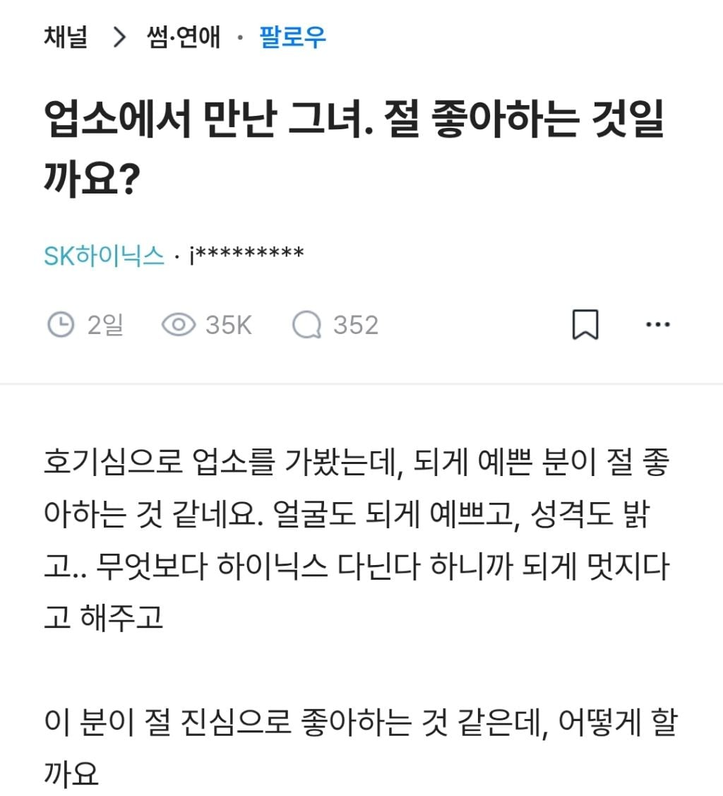
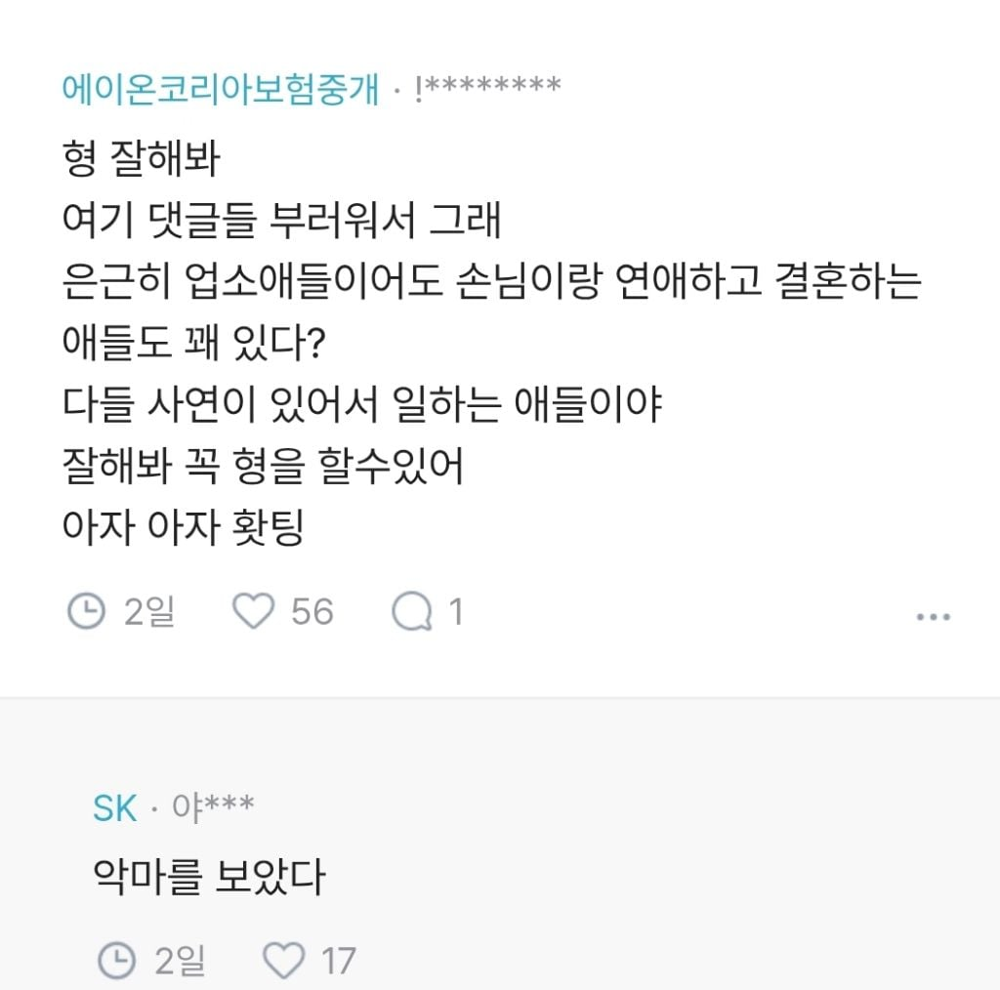

돈 받았으면 창녀고 안 받았으면 순정이지
창녀가 꽁씹이면 순애물이긴 해
고객관리 일지도...
고객관리를 꽁씹으로 하면 얼마나 큰그림 그리는거임 ㄷㄷ
하긴 하닉다닌다고 했으면

하닉 다니면 반만 뜯어도..
투자일수도 있자너
하이닉스 자랑하는거아냐?
하이닉스 븅슨 인증아냐?
블라인드여서 저런글 안써도 하이닉스라고 뜸
생산직인듯 함.. 사실 2년전만 해도 들어가는게 그렇게 어렵지는 않았으니까
하이닉스는 창녀도 꼬신다!
공사 시작
셀프 퐁퐁;
셀퐁
계곡으로 떠나는 결혼
이 돈으로 그녀를 응원해 주겠어!!
사귀게 되도 문제임
친구 소개 시켜 줘도 어떻게 만났냐 하니까 구라를 맞춰놔야 함
그런거 아니더라도 둘의 연애가 스트레스임
근데 진짜 존재하긴 한다는거임...